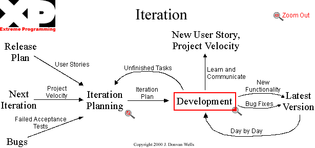

Extreme Programming
What is Extreme Programming?
Extreme Programming is one of the most popular agile processes. Originally developed by Kent Beck in the early 1990s, Extreme Programming has been growing in popularity. Beck developed this process with the following values:
- communication - the customers and team must be in constant communication
- simplicity - the simplest solution is often times the best
- feedback - the team will get better at creating software when they receive feedback
- courage - the team should not be afraid to try something new.
These four values are used in every aspect of the development. All software development really covers these four activities:
- coding
- testing
- listening
- designing
So how does Extreme Programming do it differently? The process follows these twelve basic practices
- Planning - plan before the iteration begins
- Small releases - always put small changes into production after an iteration is complete
- Metaphor - "Guide all development with a simple shared story of how the whole system works." (54)
- Simple design - the simplest design is often the best
- Testing - programmers write unit tests before programming begins and are not allowed to submit code that causes any unit test to fail.
- Refactoring - restructuring the program without changing functionality leads to simple and better design.
- Pair Programming - production code is written by two programmers sitting at one machine
- Collective Ownership - anyone can change the code at any time
- Continuous Integration - build the system many times a day, when new features are complete
- 40-hour week - only work 40 hours a week in a professional setting, nothing more than that
- On-site customer - having a user of the software on site will allow for all questions to be answered
- Coding standards - programmers write code in accordance to rules so it can easily be read
These practices sound easy enough, but we will explore how it works further. It works well with using Scrum as a project management process. That can easily be explained in the next section.
How does it work?
It is easiest to describe how the twelve practices can be used to develop software.
- Planning
- Have the customer sit down and update the plans before every iteration. (Much like the planning meetings in Scrum)
- Small releases
- Constantly integrate the software and release a working version of the software at the end of the iteration.
- Keeping things simple and testing should allow the releases to be of good quality and relatively small.
- Metaphor
- It is difficult to start out with a metaphor, but after a few iterations there is a better vision among all parties.
- The metaphor is only there to help keep everybody focused and is only successful there is a common vision.
- Simple design
- Having a clear vision helps with keeping the design simple and will allow the refactoring to take place without trouble.
- Testing
- Continuous testing ensures that the features are working properly and time does not have to be spent bug fixing.
- Refactoring
- Changing code so that it does not change functionality is refactoring
- Refactoring code ensures that the simplest design is being met.
- Since all of the code is collectively owned and programmed using standards, any programmer should feel confident to change code.
- Pair Programming
- As one programmer writes the simplest code possible to meet the requirement the other programmer thinks of unit tests.
- Collective Ownership
- The entire team should own the code, not an individual.
- All code must be treated as if they wrote it.
- Continuous Integration
- The code is integrated with the production code everyday.
- If all the tests pass, then the code is ready to go into production.
- If the tests do not pass, then the changed code is thrown out and is reprogrammed until it passes the tests.
- 40-hour week
- Developers can only work between 35-40 hours per week before their work gets worse. Producing bad code is inefficient so this is considered a bad practice.
- On-site customer
- The customer brings value to the project by writing functional tests.
- They can also help prioritizing the requirements list.
- Coding standards
- Before programming begins all of the developers agree on a standard practice of writing code.
Each of these practices must be followed to be considered Extreme Programming.
In a more visual manner this process looks like this:

(Image from extremeprogramming.org)
The requirements for the iteration are created during the Iteration Planning meeting. Any unfinished requirements are sent back to the iteration. At the end of each day a new version of the software is built and if it passes all tests then new features can be created. If it does not pass all tests then the broken pieces need to be fixed before continuing.
This visualization of the process looks a lot like the Scrum Management process. Each process goes through a planning process, a development process, and a review process. Scrum does not say how the software should be developed. Extreme Programming is the guidelines that are followed for successful development of software. The daily scrum meetings and scrum review meetings can be incorporated into this process. The process is not set in stone so it is easily manipulated to fit your needs.
Sources:
Beck, Kent. Extreme Programming Explained. Reading, Massachusetts: Addison Wesley Longman, Inc, 2000.
Wells, Don. "XP Flow Chart." 2000. ExtremeProgramming.org. 20 March 2009 <http://extremeprogramming.org/map/iteration.html>.